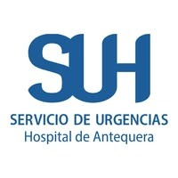
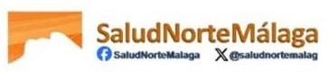
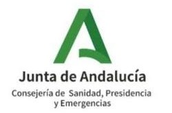
ACSA Unidad certificada · Nivel Óptimo
Cuidar a quien llega,
cuidar a quien cuida
Proyecto de Supervisión de Enfermería · Servicio de Urgencias · Hospital de Antequera
MI
Manuel Isaías Medina PérezSupervisor de Enfermería · Área de Gestión Sanitaria Norte de Málaga
Agenda
Quince minutos, seis paradas
01El servicio
02Personas y gobernanza
03Procesos y seguridad
04Cuidados auditados
05ACSA y DAFO
06Plan 2027
01 · El servicio
Nueve áreas, un mismo equipo
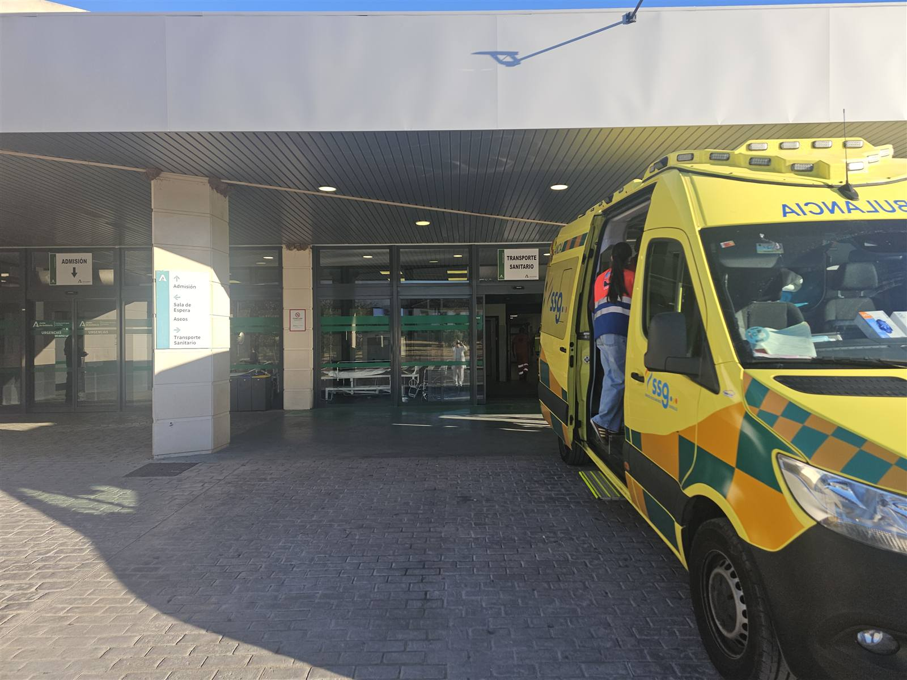
Entrada
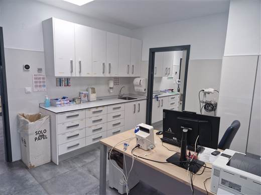
Triaje
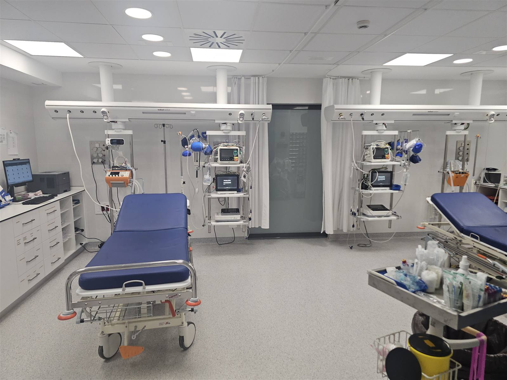
Críticos
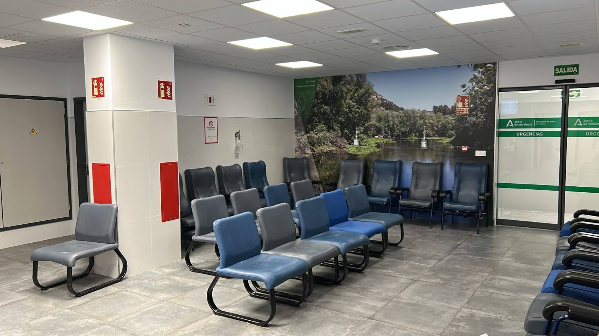
Sala de espera
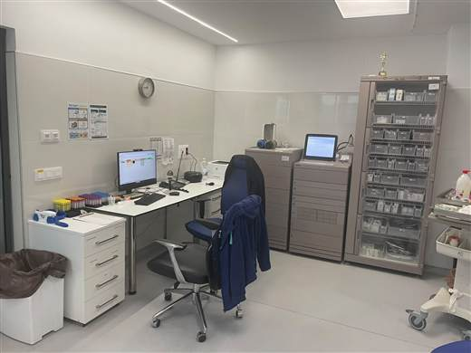
Consulta Enfermería
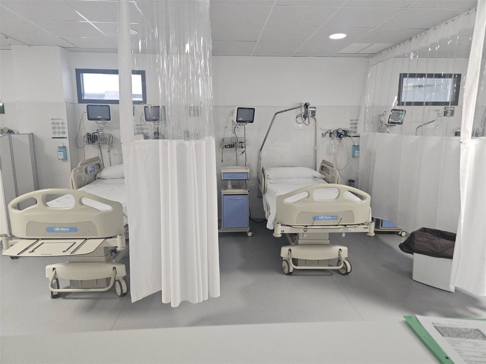
Observación grave
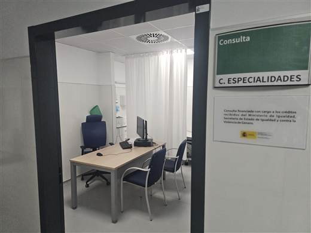
Consultas
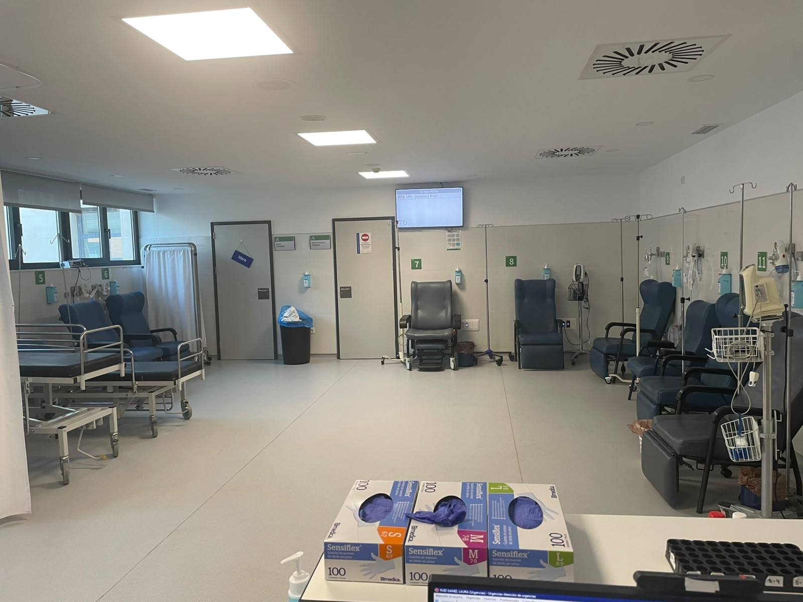
Tratamiento
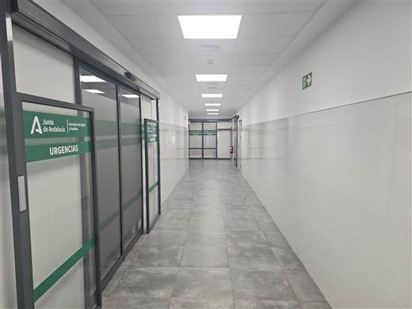
Pasillo críticos
01 · El servicio
Para qué estamos aquí
${target}
Misión
Atención urgente de calidad, segura y humana, priorizando por gravedad y garantizando la continuidad de cuidados al alta.
${compass}
Visión
Ser referencia por la excelencia en cuidados, la cultura de seguridad, la innovación digital y el bienestar de los profesionales.
${heart}
Valores
Seguridad · Humanización · Trabajo en equipo · Evidencia · Transparencia · Innovación · Respeto
01 · El servicio
Triaje: la gravedad marca el orden
01 · El servicio
Sala de Críticos: 3 puestos, 6 fases, ABCDE
PNT-URG-CRIT-001 v1.0 · recepción, estabilización, monitorización y manejo inicial del paciente crítico, con dotación mínima por puesto y prioridad.
02 · Personas y gobernanza
Un modelo de supervisión en seis pilares
${users}
Personas
Acogida, formación, gobernanza y clima laboral.
${layers}
Procesos
PNT digitalizados y circuitos definidos.
${shieldCheck}
Seguridad
Prácticas seguras y gestión de riesgos.
${heartPulse}
Cuidados
Dolor, continuidad, fragilidad y heridas auditados.
${award}
Calidad
ACSA Óptimo y mejora continua.
${monitor}
Digital
20 herramientas propias a pie de cama.
02 · Personas y gobernanza
Nadie empieza solo, todos aprendemos
${users}
Acogida PG-UAP-01 v6
Manual de acogida, funciones y responsabilidades y plano de evacuación.
ES 5 01.10_02
${trophy}
Juego de la Acreditación
102 puntos del checklist y 50 estándares en casos «¿cumple o no cumple?».
ES 5 01.12_04
${book}
Repaso continuo
Tarjetas de repaso y preguntas integradas en cada protocolo digital.
Formación in situ
02 · Personas y gobernanza · Fortaleza
De la auditoría de PRL al clima laboral
1Auditoría PRL
Riesgos de seguridad, ergonómicos y psicosociales.
ES 5 06.06_02
${right}
2Reuniones de gobernanza
El equipo analiza, prioriza y decide.
ES 5 01.01_01
${right}
3Medidas acordadas
Prevención de agresiones, PNT de contención, organización.
${right}
4Mejor clima laboral
Medido y difundido como motor organizativo.
ES 5 01.16_02
03 · Procesos y seguridad
Protocolos vivos, no en un cajón
03 · Procesos y seguridad
Cuando el tiempo es tejido
${brain}
Ictus
Ventana terapéutica, fibrinólisis, trombectomía y Teleictus.
${virus}
Sepsis
NEWS2 automático, foco y antibioterapia (actualización 04-may-2026).
${bandage}
Trauma
Criterios de activación, TSR, Glasgow y ventana del tranexámico.
${heartPulse}
Infarto
SCACEST v5 y SCASEST: criterios ECG y reperfusión.
03 · Procesos y seguridad
EN DIRECTO
Triaje y asignación de pacientes
- ${check}SET de 5 niveles con web_e-PAT
- ${check}Recorrido del paciente paso a paso
- ${check}6 circuitos excluyentes
- ${check}Fragilidad (EPADI ≥ 6) y violencia
03 · Procesos y seguridad
Seguridad por diseño
- ${check}Identificación inequívoca con NHC / NUHSA · ES 5 05.05_03
- ${check}Contención como último recurso: ≥ 4 personas, valoración médica < 1 h, revisión ≤ 4 h
- ${check}Fluidoterapia segura según PNT v1.0 · ES 5 05.10_00
- ${check}Detección precoz de sepsis con NEWS2
- ${check}Protección de datos: las herramientas no guardan datos de pacientes · ES 5 06.14_03
04 · Cuidados auditados · Fortaleza
ES 5 04.06_01 · obligatorio
Auditorías de dolor
- ${check}Escalas validadas (EVA, EVN) registradas
- ${check}PNT de Dolor v1 · 15/12/2025
- ${check}Información escrita: fármaco, dosis, vía y duración
- ${check}Formación del equipo en manejo del dolor
herramientas/dolor-urgencias.html
04 · Cuidados auditados · Fortaleza
Continuidad de cuidados: el alta no es el final
1Referentes
Enfermera y médico responsables asignados.
${right}
2Plan de cuidados
NANDA-NIC-NOC adaptado al proceso.
${right}
3Informe al alta
Registro en Diraya y hoja para el paciente.
${right}
4Auditoría
Calidad del registro y retorno al equipo.
ES 5 03.11 · 03.12
04 · Cuidados auditados
Cuidados que se notan
${person}
Fragilidad · EPADI
Índice 0-10. Con 6 o más: circuito de paciente frágil y cuidador acompañante.
${bandage}
Heridas · TIMERS
Evaluación, manejo local y catálogo de la Comisión de Heridas AGSNM.
${shield}
Paciente agitado
De la desescalada verbal a la sujeción solo como último recurso.
04 · Cuidados · Educación sanitaria
EN DIRECTO
Recomendaciones de Salud
- ${check}21 guías al alta con fuentes
- ${check}15 consejos de promoción de la salud
- ${check}Hoja A4 y registro para Diraya
- ${instagram}Conectado con @suh_antequera_
herramientas/recomendaciones-alta.html
05 · ACSA y DAFO
Certificados en nivel Óptimo
76 estándares · 3 bloques · 6 criterios. Visita reciente de evaluadores con muy buena experiencia.
Avanzado
Grupo I · > 70 %
Grupo II
Grupo III
ÓptimoSUH
Grupo I · 100 %
Grupo II · > 40 %
Grupo III
Excelente
Grupo I · 100 %
Grupo II · 100 %
Grupo III · > 40 %
05 · ACSA y DAFO
Análisis DAFO
05 · Área de mejora prioritaria
TECLA y TICLA: cada minuto sin clasificar cuenta
Llegada
admisión
TECLAespera hasta la clasificación
Inicio
del triaje
TICLAduración del triaje
Prioridad
asignada (SET)
- ${check}Medir TECLA y TICLA basales por franja horaria desde web_e-PAT
- ${check}Activar la segunda consulta de triaje según la demanda, como prevé el PNT
- ${check}Formación y entrenamiento del equipo de triaje en el SET
- ${check}Auditoría trimestral de tiempos y retorno al equipo
06 · Plan 2027
Seis compromisos para 2027
Gracias.
Manuel Isaías Medina Pérez · Supervisor de Enfermería · Servicio de Urgencias · Hospital de Antequera